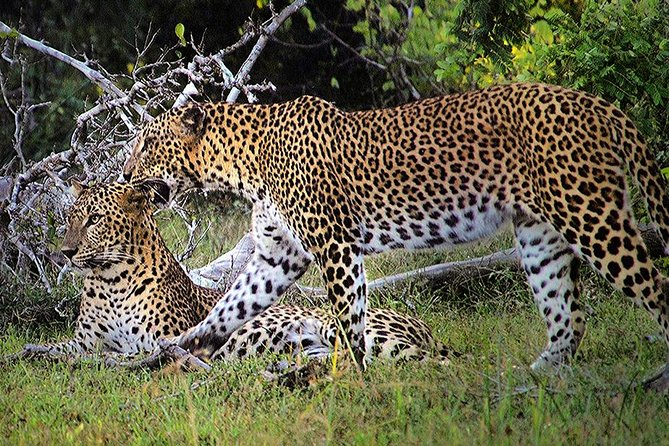

Yala National Park Yala National Park is a huge area of forest, grassland and lagoons bordering the Indian Ocean, in southeast Sri Lanka. It’s home to wildlife such as leopards, elephants and crocodiles, as well as hundreds of bird species. Inland, Sithulpawwa is an ancient Buddhist monastery. Nearby caves contain centuries-old rock paintings. Southwest, Magul Maha Viharaya also has ancient Buddhist ruins. Both are pilgrimage sites. |
 Udawalawe National Park Udawalawe National Park Being located on the boundary of Sabaragamuwa and Uva provinces of Sri Lanka. Udawalawe National Park is situated about 200 km south-east of Colombo. You can easily reach Udawalawa National Park from Colombo via Rathnapura – Pelmadulla – Colombage Ara – Thanamalwila Road and access to Udawalawe park entrance. Initially, the objective of constructing this national park was to provide a sanctuary for the wild animals exiled due to the construction of the Udawalawe reservoir. Udawalawe reservoir is now considered as the main attraction for the elephants at the Udawalawe National Park. Established in the dry zone of the country, the sanctuary gets an annual rain fall of approximately 1,525 mm and the average temperature remains around 29.5C0. |
 Wilpattu National Park Wilpattu National Park (Also known as Park of natural lakes) is a recreation center situated in the Northwest dry zone of the island of Sri Lanka. The extraordinary element of this stop is the presence of "Willus" (Natural lakes), sand-rimmed water bowls or dejections that load with water. The recreation center is found 30 km west Anuradhapura, 26 km north of Puttalam and roughly 180 km north of the capital Colombo. The recreation center is 131, 693 hectares and reaches from 0 to 152 meters above ocean level. About sixty lakes (Willu) and tanks are discovered spread all through Wilpattu. Wilpattu is the biggest and one of the most seasoned National Parks in Sri Lanka. Wilpattu is among the top national parks widely acclaimed for its panther (Panthera pardus kotiya) population. |